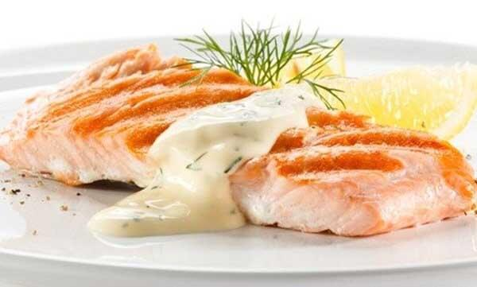

Cá hồi đút lò sốt kem phô mai

Nguyên liệu:
- 250 gram phi lê cá hồi
- 1/4 muỗng cà phê muối
- 1/4 muỗng cà phê tiêu
- 100 ml sữa tươi không đường
- 1 trái chanh
- 3 muỗng canh kem phô mai
- 2 muỗng canh sốt Mayonnaise
- 1 ít đường
Cách làm:
- Cá hồi làm và rửa sạch, sau đó ướp với 1/4 muỗng cà phê tiêu, 1/4 muỗng cà phê muối, 1/2 muỗng cà phê đường ăn kiêng khoảng 15 phút. Tiếp đó đem gói vào giấy bạc và nướng ở 170 độ C trong khoảng 30 phút.
- Đun sữa và vỏ chanh với lửa nhỏ, đến khi sữa đạt khoảng 70 độ C thì cho nước cốt trái chanh vào. Cho thêm 3 muỗng canh kem phô mai cùng 2 muỗng canh sốt mayonnaise vào cùng. Sau đó khuấy đều tay cho đến khi các nguyên liệu tan hết và hơi đặc lại thì tắt bếp và để nước sốt nguội.
- Cuối cùng là lấy cá ra dĩa, tưới phần nước sốt lên trên, trang trí một chút ngò rí cho đẹp mắt và thưởng thức.